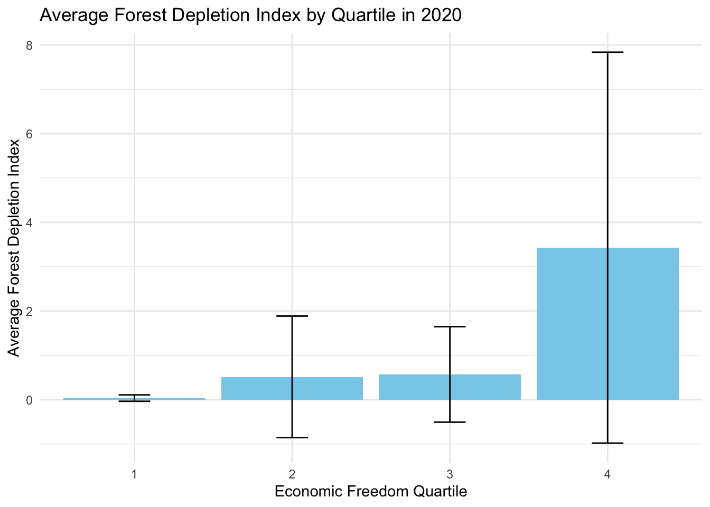

# import libraries
library(here)
library(dplyr)
library(tidyverse)
library(ggplot2)
library(janitor)
library(tidyr)
library(forecast)
library(randomForest)
library(gplots)
library(ggforce)
# clear environment for sanity
rm(list = ls())Introduction
When we scrutinize the relationship between capitalism and environmental impacts, we’re engaging in a complex dialogue about efficiency, freedom, and sustainability. Markets act as a powerful mechanism for efficient resource allocation. Yet market-based economies, with the intrinsic drive for growth, often neglect the environmental dimension and impact. This oversight manifests in a key shortcoming: the failure to incorporate environmental costs into the pricing of goods and services.
The role of freedom in global economies brings about a dual impact on the environment. The positive aspects are rooted in the innovative potential and efficiency that economic freedom encourages. In a capitalist system, the competitive market can be a catalyst for discovering sustainable and economical production methods. Furthermore, the wealth generated in such systems can boost both private and public investments in environmental initiatives. Regulatory efficiency also stands out as an advantage, offering the ability to quickly adapt and respond to emerging environmental challenges. Unfortunately, there are many reasons why this idealized version falls short. At the end of the day, addressing the climate crisis is a collective action dilemma, since the actions of one person are negligible in the grand scheme of things. This makes it difficult for consumers to support climate-focused goods and services in exchange for relatively cheaper alternatives.
Now, the ugly. Capitalism often leads to aggressive resource use, resulting in issues like deforestation, loss of biodiversity, and water pollution. The tendency of capitalism to prioritize short-term profit over long-term sustainability creates a blind spot for environmental considerations. This short-sighted focus on immediate financial returns often overshadows the broader, more enduring impacts on the environment. In fact, the wealthiest 10 percent of the global population are responsible for half of global emissions. (Reid 2023) Additionally, the burden of environmental degradation in capitalist systems is not evenly distributed. Often, it’s the less affluent communities that bear the worst of this degradation, leading to a disparity in environmental impact and quality of life.
While capitalism has the potential to foster innovation and generate funds that could benefit environmental conservation, resource exploitation and prioritization of short-term profits present substantial challenges to achieving true environmental sustainability.
What is Economic Freedom?
There is certainly a level of subjectivity, or at least a certain amount of uncertainty, when scoring the freedom of an economy. As a result, it seems impossible to create a perfect score for economic freedom. However, this doesn’t mean people haven’t tried to create a spectrum to measure how free and open different economies are.
The Economic Freedom of the World: 2022 Annual Report serves as the backbone of the analysis in this exploration. The data set has a multitude of columns, the most important of which is gives each country an economic freedom index score on a scale from 1 to 10. According to the Fraser Institute, the pillars of their scoring of economic freedom depend on “personal choice, voluntary exchange, freedom to enter markets and compete, and security of the person and privately owned property.” (Gwartney 2022) This economic freedom score is measured in five areas: size of government, legal system and property rights, sound money, freedom to trade internationally, and regulation.
In addition to the economic freedom index column, there are a plethora of interesting variables that can be analyzed in this data set.
The report discusses how countries that are have higher levels of economic freedom outperform less free countries in indicators of well being. Countries in the top quartile of economic freedom saw an average per-capita GDP of $48,251 in 2020, while countries in the bottom quartile for economic freedom had an average of $6,542. Furthermore, life expectancy in the top quartile was 80.4 years and 66 years in the bottom quartile in 2020 (Gwartney 2022) However, do these positive impacts of higher economic freedom also lead to better environmental outcomes? This analysis will put this question to the test.
Environmental Outcomes Analyzed
This analysis will consider several environmental outcomes pulled from the World Bank website. These data include freshwater withdrawal as a proportion of available freshwater resources (water stress), net forest depletion as a percentage of GNI, renewable energy output as a percentage of total energy consumption, renewable energy consumption as a percentage of total energy consumption, and methane emissions in metric tons of CO2 per capita (WorldBank 2023) Combined with the economic freedom data, this will allow for the analysis to look at the relationship between economic freedom scores and related variables to environmental outcomes over time in different countries.
Data Wrangling
First, let’s import the libraries we will need to conduct this analysis.
Data Cleaning
Now, let’s import and clean the data containing the freedom index and other scores by country.
# read in freedom data
freedom_raw <- read.csv('data/efw_ratings.csv', header = FALSE)This data needs a good bit of clean up. This next code chunk adjusts the column headers and converts column types appropriately.
# set the 5th row as the column names
colnames(freedom_raw) <- freedom_raw[5,]
# remove the first 4 rows since they are now empty and clean names, remove columns
freedom <- freedom_raw[-c(1:5), ] %>%
clean_names() %>%
subset(select = -na) %>%
subset(select = c(-na_2, -na_3, -na_4, -na_5)) %>%
subset(select = -world_bank_region) %>%
subset(select = -world_bank_current_income_classification_1990_present)
# convert year columns from char to num
freedom <- freedom %>%
mutate(across(6:ncol(freedom), as.numeric)) %>%
mutate(economic_freedom_summary_index = as.numeric(as.character(economic_freedom_summary_index)))Now, lets move on to reading in the next dataset. The freedom data serves as the policy side of the data – now we want to append and compare environmental outcomes based on different political and economic factors.
# read in esg data
esg_wb <- read.csv('data/esg_wb.csv') %>%
clean_names()This data also needs to be cleaned up a bit. Let’s get to work.
column_names <- c("x1998_yr1998", "x1999_yr1999", "x2000_yr2000",
"x2001_yr2001", "x2002_yr2002", "x2003_yr2003",
"x2004_yr2004", "x2005_yr2005", "x2006_yr2006",
"x2007_yr2007", "x2008_yr2008", "x2009_yr2009",
"x2010_yr2010", "x2011_yr2011", "x2012_yr2012",
"x2013_yr2013", "x2014_yr2014", "x2015_yr2015",
"x2016_yr2016", "x2017_yr2017", "x2018_yr2018",
"x2019_yr2019", "x2020_yr2020", "x2021_yr2021",
"x2022_yr2022")
# function to extract and convert the year part of a column name to numeric
extract_year <- function(column_name) {
year_str <- substr(column_name, 2, 5)
as.numeric(year_str)
}
first <- names(esg_wb)[1:4]
# apply the function to each column name
numeric_years <- sapply(column_names, extract_year)
new_cols <- c(first, numeric_years)
names(esg_wb) <- new_cols
# update esg data
esg_wb <- esg_wb %>%
mutate(across(5:ncol(.), ~ as.numeric(as.character(.))))# make longer so it is compatible to join with freedom data
esg_wb_long <- esg_wb %>%
pivot_longer(
cols = '1998':'2022',
names_to = "Year",
values_to = "Value"
) Finally, let’s merge the data sets together by year and country name.
# rename the country column in freedom dataset to match esg_wb_long
names(freedom)[names(freedom) == "countries"] <- "country_name"
# rename the year column in freedom dataset to match esg_wb_long
names(freedom)[names(freedom) == "year"] <- "Year"
# perform the join
freedom_esg <- merge(freedom, esg_wb_long, by = c("Year", "country_name"))
freedom_esg <- freedom_esg %>%
mutate(Year = as.numeric(as.character(Year)),
Value = as.numeric(as.character(Value)))
# save dataset as a csv
write.csv(freedom_esg, "freedom_esg.csv", row.names = FALSE)Sweet! Now we have the dataset we will be working with in the analysis.
Data Filtering
For convenience, I have created a data frame for each of the environmental indicators that will be analyzed.
water_stress <- freedom_esg %>%
filter(series_name == "Level of water stress: freshwater withdrawal as a proportion of available freshwater resources")
forest_depletion <- freedom_esg %>%
filter(series_name == "Adjusted savings: net forest depletion (% of GNI)")
renewable_output <- freedom_esg %>%
filter(series_name == "Renewable electricity output (% of total electricity output)")
renewable_consumption <- freedom_esg %>%
filter(series_name == "Renewable energy consumption (% of total final energy consumption)")
methane_emissions <- freedom_esg %>%
filter(series_name == "Methane emissions (metric tons of CO2 equivalent per capita)")Analysis
Emissions
In the first piece of analysis, let’s look at the methane emissions data. The units for which the emissions are recorded in the data set are metric tons of CO2 equivalent per capita.
First, let’s compare the average emission by economic freedom quartile from 2000 to 2020.
# create summary table for mean and stdev of methane emissions for each economic freedom quartile
methane_emissions_quartile <- methane_emissions %>%
group_by(Year, quartile) %>%
summarize(avg_methane = mean(Value, na.rm = TRUE),
std_methane = sd(Value, na.rm = TRUE)) %>%
na.omit()
# create bar chart of the above summary table
methane_emissions_plot_with_error <- ggplot(methane_emissions_quartile, aes(x = Year, y = avg_methane, color = as.factor(quartile))) +
geom_smooth(se = TRUE) +
labs(title = "Methane Emissions Over Time by Economic Freedom Quartile",
x = "Year",
y = "Avg Methane Emissions (metric tons of CO2 per capita)",
color = "Economic Freedom Quartile") +
theme_minimal()
# display the plot
methane_emissions_plot_with_error
Interesting, so the second quartile of economically free countries has the highest methane emissions by a significant amount across the entire time period. Overall, the emissions levels of all quartiles decreased from 2000 to 2020, a positive sign in the hopes of becoming a carbon-neutral planet.
Next, let’s perform a linear regression on the economic freedom index and methane emissions to understand the effect of economic freedom on methane emissions.
# run linear regression
methane_lm <- lm(Value ~ economic_freedom_summary_index, data = methane_emissions)
summary(methane_lm)
Call:
lm(formula = Value ~ economic_freedom_summary_index, data = methane_emissions)
Residuals:
Min 1Q Median 3Q Max
-1.6361 -1.0029 -0.7013 -0.0672 14.2312
Coefficients:
Estimate Std. Error t value Pr(>|t|)
(Intercept) 1.725557 0.233174 7.400 1.75e-13 ***
economic_freedom_summary_index -0.004037 0.034373 -0.117 0.907
---
Signif. codes: 0 '***' 0.001 '**' 0.01 '*' 0.05 '.' 0.1 ' ' 1
Residual standard error: 2.028 on 3029 degrees of freedom
(511 observations deleted due to missingness)
Multiple R-squared: 4.554e-06, Adjusted R-squared: -0.0003256
F-statistic: 0.01379 on 1 and 3029 DF, p-value: 0.9065This regression reveals that there is essentially no relationship between methane emissions and economic freedom, as shown by the exceptionally high p-value. When the freedom score is increased by 1, the economic freedom decreases by a measely .004037. Let’s consider the analysis on a single year to see if this is any more significant (which shouldn’t be that hard to achieve!).
# filter methane data for 2019
methane_emissions_2019 <- methane_emissions %>%
filter(Year == 2019) %>%
na.omit()
# run linear regression on 2019 data
methane_lm_2019 <- lm(Value ~ economic_freedom_summary_index, data = methane_emissions_2019)
summary(methane_lm_2019)
Call:
lm(formula = Value ~ economic_freedom_summary_index, data = methane_emissions_2019)
Residuals:
Min 1Q Median 3Q Max
-1.3527 -0.7840 -0.6130 -0.1845 10.2183
Coefficients:
Estimate Std. Error t value Pr(>|t|)
(Intercept) 0.6073 1.3714 0.443 0.659
economic_freedom_summary_index 0.1196 0.1932 0.619 0.537
Residual standard error: 1.736 on 94 degrees of freedom
Multiple R-squared: 0.004061, Adjusted R-squared: -0.006534
F-statistic: 0.3833 on 1 and 94 DF, p-value: 0.5373Yikes! Not any better - a negative adjusted r-squared value. This is a sign that the model is a poor fit for the data and is less informative than the mean of the dependent variable. It can also be due to overfitting, but this is not the case since we are only using one predictor variable. Maybe there is a combination of variables from the multitude of columns coming from the freedom data set that could be useful and informative in predicting methane emissions. Let’s take a look.
The code below finds the 10 variables that have the strongest correlation to methane emissions.
# make sure 'Value' is numeric
methane_emissions$Value <- as.numeric(methane_emissions$Value)
# select only numeric columns (excluding 'Value' for now)
methane_numeric <- methane_emissions %>%
select_if(is.numeric) %>%
dplyr::select(-Value)
# calculate correlation of each numeric column with the 'Value' column
methane_correlations <- sapply(methane_numeric, function(x) {
if(is.numeric(x)) {
return(cor(x, methane_emissions$Value, use = "complete.obs"))
} else {
return(NA)
}
})
# convert to a dataframe
methane_corr_results <- as.data.frame(methane_correlations)
# sort by the absolute value to find the strongest correlations
methane_sorted_correlations <- methane_corr_results %>%
rownames_to_column("series") %>%
arrange(desc(abs(methane_corr_results)))
# display results
head(methane_sorted_correlations, 10) series methane_correlations
1 ie_state_ownership -0.3134906
2 data 0.3073977
3 data_4 -0.3000107
4 x3b_standard_deviation_of_inflation -0.2831654
5 x1a_government_consumption -0.2736432
6 data_5 -0.2680756
7 gender_disparity_index -0.2157412
8 x1dii_top_marginal_income_and_payroll_tax_rate 0.2132415
9 x1_size_of_government -0.2067589
10 x1d_top_marginal_tax_rate 0.2024452These are the 10 variables that have the strongest correlation with methane emission levels. For context: the data variable represents government consumption, data_4 represents the top marginal income tax rate, and data_5 represents top marginal tax rate. It is essential to consider whether there is a causal relationship between the variables and the relationships with methane emissions must be investigated on a deeper level to get a sense of the true influence.
Let’s consider the hypothesis that a strong government with stable currency and lower regulatory influence will have higher methane emissions due to the amount of profitability that can be gained through traditional methane production of goods.
methane_emission_2020_selected <- methane_emissions %>%
filter(Year == 2020) %>%
dplyr::select(country_name, x1_size_of_government, x3_sound_money, x5_regulation, Value, quartile) %>%
na.omit()
emissions_lm_govt <- lm(Value ~ x1_size_of_government + x3_sound_money + x5_regulation, data = methane_emission_2020_selected)
summary(emissions_lm_govt)
Call:
lm(formula = Value ~ x1_size_of_government + x3_sound_money +
x5_regulation, data = methane_emission_2020_selected)
Residuals:
Min 1Q Median 3Q Max
-1.7025 -0.9243 -0.5214 0.1214 10.3849
Coefficients:
Estimate Std. Error t value Pr(>|t|)
(Intercept) 2.00245 1.22304 1.637 0.1036
x1_size_of_government -0.20041 0.11974 -1.674 0.0962 .
x3_sound_money 0.04109 0.11744 0.350 0.7269
x5_regulation 0.07798 0.16736 0.466 0.6419
---
Signif. codes: 0 '***' 0.001 '**' 0.01 '*' 0.05 '.' 0.1 ' ' 1
Residual standard error: 1.772 on 157 degrees of freedom
Multiple R-squared: 0.02424, Adjusted R-squared: 0.005599
F-statistic: 1.3 on 3 and 157 DF, p-value: 0.2764The results of the regression show that the strong government variable set I put together do not strongly predict the methane emission levels. Interpreting the coefficients: a one unit increase in the size of government is associated with a .20041 metric ton decrease in methane emission levels holding all else constant, a one unit increase in sound money is associated with an increase in a .04109 metric ton increase in emission levels holding all else constant, and a one unit increase in regulation leads to a .07798 metric ton increase in emission levels holding all else constant. The adjusted R-squared value is very low, suggesting that the model explains very little of the variability in methane emission levels. The p-value of .274 speaks to the overall statistical insignificance of the model.
There is not evidence that the variables in the freedom data set correlate strongly with methane emission outputs. Intuitively, this makes sense because essentially all nations generate some amount of their energy using methane since it is the traditional method of forming energy. Capitalist, socialist and communist countries alike are more likely to produce the amount of energy needed through whatever means necessary. Energy use is a complex subject and there are many more factors that go into methane emission output levels for each country. Unfortunately, the indices and scores in the freedom dataset are not able to capture all of these nuances and it would take a much larger data with a wider range of relevant columns to accurately predict methane emissions.
Renewable Energy Consumption
Increasing the rate of renewable energy consumption is imperative in the fight against climate change. While it would be logical to assume that private and public ensurers alike would react to the impending climate crisis by increasing demand in renewable energy, this is not really the case. To make matters worse, oil consumption is actually increasing with ambiguous signs of slowing down. (Lawler 2023)
Plotting renewable energy percentage levels as a histogram can give us a better understanding of the distribution across all countries in 2020.
# filter renewable energy consumption for 2020
renewable_consumption_2020 <- renewable_consumption %>%
filter(Year == 2020)
# plot renewable energy consumption histogram.
ggplot(renewable_consumption_2020, aes(x = Value)) +
geom_histogram(binwidth = 3, fill = "blue", color = "black") +
labs(title = "Histogram of Renewable Energy Consumption Percentage",
x = "Percentage of Renewable Energy Consumption (of total energy use)",
y = "Frequency") +
theme_minimal() 
The distribution is strongly right-skewed with a long right tail. There is the highest density of values from zero to about 25 percent, with a strong tail for values above 75% as well.
Now, I want to investigate whether there is a significant difference in renewable energy consumption between the first and fourth economic freedom quartiles. We can utilize a Welch’s two-sample t-test and create new dataframes of each quartile for the analysis.
# subset renewable energy consumption for Q1 of economic freedom
quartile_1 <- renewable_consumption %>%
filter(quartile == 1) %>%
select(Value)
# subset renewable energy consumption for Q4 of economic freedom
quartile_4 <- renewable_consumption %>%
filter(quartile == 4) %>%
select(Value)
# Perform Welch's t-test
t_test_result <- t.test(quartile_1$Value, quartile_4$Value)
# View the results
t_test_result
Welch Two Sample t-test
data: quartile_1$Value and quartile_4$Value
t = -24.969, df = 1102.2, p-value < 2.2e-16
alternative hypothesis: true difference in means is not equal to 0
95 percent confidence interval:
-36.61378 -31.27871
sample estimates:
mean of x mean of y
20.18034 54.12658 This very small p-value indicates a statistically significant difference in renewable energy consumption rates between the first and fourth economic freedom quartiles. The mean of the fourth quartile is significantly higher than the first quartile. It’s important to remember that this result does not imply causation. The differences could be influenced by a multitude of factors, such as natural resources availability, technological advancements, and public awareness about renewable energy in different countries.
Finally, let’s look at renewable energy consumption rates across each economic freedom quartile from 2000 to 2020.
# group renewable consumption data by year and quartile
renewable_consumption_summary <- renewable_consumption %>%
filter(Year <= 2020) %>%
group_by(Year, quartile) %>%
summarize(avg_consumption = mean(Value, na.rm = TRUE)) %>%
na.omit()
# plot average renewable consumption rate by quartile
renewable_consumption_quartile_plot <- ggplot(renewable_consumption_summary, aes(x = Year, y = avg_consumption, color = as.factor(quartile))) +
geom_line(size = 1.2) +
labs(title = "Renewable Energy Consumption Rates Across Economic Freedom Quartiles",
x = "Year",
y = "Average Renewable Energy Consumption (%)",
color = "Economic Freedom Quartile") +
theme_minimal()Warning: Using `size` aesthetic for lines was deprecated in ggplot2 3.4.0.
ℹ Please use `linewidth` instead.# display plot
renewable_consumption_quartile_plotThe graph shows that renewable energy consumption rate average of the lowest quartile is the highest among all quartiles, with the 3rd quartile being the second highest by a significant margin from 2000 all the way up until 2020. This is interesting as it reveals that countries with less economic freedom tend to have higher renewable energy consumption rates. It’s possible this is because of government regulation that mandates a certain level of consumption be renewable. However, there are other alternative hypotheses as well. For instance, it could be that since we know countries that have less freedom tend to have lower GDP and overall economic output, that they simply need less energy overall and can therefore rely more on renewable energy consumption, which might be cheaper and more accessible today that the alternative of coal or oil fueled. Additionally, fostering a preference for renewable energy in poorer, less free countries can decrease the reliance on oil and natural gas, leading to energy portfolios that are more resilient to fluctuations and spikes in prices. This dynamic will be investigated later in the omitted variable bias section.
Renewable Energy Output
Renewable energy output is valuable in determining a country’s economic impact since energy that is consumed can be exported to other countries for consumption. Furthermore, certain countries are better set up to capitalize on the economic gains of producing renewable energy due to regional climate conditions. For example, Costa Rica can produced so much renewable energy that it has enough to export it to countries in the Central American Regional Electricity Market. (Council 2022) Having renewable output rates closer to 100 bodes well for a countries long-term resilience and preparedness for increases in oil prices and the impending need for a total shift to renewable energy. These countries with higher rates are “ahead of the curve” but there are lots of variables that may still make energy demands difficult to meet due to variables outside of that country’s control. Let’s investigate how economic freedom and renewable energy output are related. Are countries with less economic freedom more likely to have higher renewable energy outputs since the government has more control over the market and regional demand for energy? Or are more free economies more likely to report higher renewable energy outputs due to more natural market mechanisms?
# run linear regression of economic freedon on renewable energy output
renewable_output_lm <- lm(Value ~ economic_freedom_summary_index, data = renewable_output)
summary(renewable_output_lm)
Call:
lm(formula = Value ~ economic_freedom_summary_index, data = renewable_output)
Residuals:
Min 1Q Median 3Q Max
-52.717 -29.203 -8.951 26.743 72.335
Coefficients:
Estimate Std. Error t value Pr(>|t|)
(Intercept) 66.6093 4.3933 15.162 < 2e-16 ***
economic_freedom_summary_index -4.6307 0.6492 -7.133 1.32e-12 ***
---
Signif. codes: 0 '***' 0.001 '**' 0.01 '*' 0.05 '.' 0.1 ' ' 1
Residual standard error: 33.3 on 2237 degrees of freedom
(1303 observations deleted due to missingness)
Multiple R-squared: 0.02224, Adjusted R-squared: 0.0218
F-statistic: 50.88 on 1 and 2237 DF, p-value: 1.321e-12The resulting p-value shows that there is a significant relationship between economic freedom and renewable energy output. Countries with higher economic freedom scores tend to have lower rates of renewable energy output. However, the adjusted r-squared value of .0218 says that the model descibes very little of the distribution of renewable energy output.
Now, let’s investigate the renewable energy output across each freedom quartile over time.
# group renewable consumption data by year and quartile
renewable_output_summary <- renewable_output %>%
filter(Year <= 2015) %>%
group_by(Year, quartile) %>%
summarize(avg_output = mean(Value, na.rm = TRUE)) %>%
na.omit()
# plot average renewable consumption rate by quartile
renewable_output_quartile_plot <- ggplot(renewable_output_summary, aes(x = Year, y = avg_output, color = as.factor(quartile))) +
geom_line(size = 1.2) +
labs(title = "Renewable Energy Output Rates Across Economic Freedom Quartiles",
x = "Year",
y = "Average Renewable Energy Output Rate (%)",
color = "Economic Freedom Quartile") +
theme_minimal()
# display plot
renewable_output_quartile_plot
We have to filter the years from 2000 to 2015 since the data set does not contain many values for renewable energy output after 2015. The results are similar to the renewable energy consumption plot: the fourth quartile has the highest output rate, followed by the third quartile. Notably, the most free quartile has seen a strong increase in renewable energy output from 2010 to 2015, which bodes well for future outlook of renewable energy in more open countries.
Next, let’s see confirm the statement that there is a significant difference in renewable energy output across each quartile of economic freedom with the help of an ANOVA test.
renewable_output$quartile <- factor(renewable_output$quartile)
anova_ro <- aov(Value ~ quartile, data = renewable_output)
summary(anova_ro) Df Sum Sq Mean Sq F value Pr(>F)
quartile 3 62414 20805 18.79 4.93e-12 ***
Residuals 2235 2475053 1107
---
Signif. codes: 0 '***' 0.001 '**' 0.01 '*' 0.05 '.' 0.1 ' ' 1
1303 observations deleted due to missingnessThe p-value of 4.93e-12 shows a significant difference across economic freedom quartiles for renewable energy output. This checks out with the time series graph shown above, especially when considering the stark differences between the fourth versus the first and second quartiles.
Forest Depletion
Deforestation is a global issue that exacerbates the climate crisis. Countries that cut down trees at higher rates for timber and clearing land for agriculture come at the expense of the health of ecosystems around the world. Are countries with more freedom cutting down more forests to exploit the profit it has to offer? Or are less free countries that are economically limited, and likely poorer, more likely to do so?
# generate summary table for forest depletion for 2020
forest_depletion_2020_quartile_summary <- forest_depletion %>%
group_by(quartile) %>%
filter(Year == 2020) %>%
summarize(avg_depletion = mean(Value, na.rm = TRUE),
std_depletion = sd(Value, na.rm = TRUE))# plotting above summary table
ggplot(forest_depletion_2020_quartile_summary, aes(x = factor(quartile), y = avg_depletion)) +
geom_bar(stat = "identity", position = position_dodge(), fill = "skyblue") +
geom_errorbar(aes(ymin = avg_depletion - std_depletion, ymax = avg_depletion + std_depletion),
width = 0.2, position = position_dodge(0.9)) +
labs(title = "Average Forest Depletion Index by Quartile in 2020",
x = "Economic Freedom Quartile",
y = "Average Forest Depletion Index") +
theme_minimal()
This visualization provides some strong takeaways. The least economically free quartile has significantly higher rates of deforestation than the other three quartiles, as the mean for the 4th quartile is roughly 3.5 while the next highest quartile index is less than 1. Furthermore, the most economically free quartile has seen almost no deforestation based on the index score that is very close to zero.
Now let’s look at deforestation indices over time to see if there is a temporal element to the relationship between economicfreedom and deforestation.
# aggregate the forest depletion data by year and quartile
forest_depletion_time_series <- forest_depletion %>%
group_by(Year, quartile) %>%
summarize(avg_depletion = mean(Value, na.rm = TRUE),
std_depletion = sd(Value, na.rm = TRUE)) %>%
na.omit()
# plot a line graph
ggplot(forest_depletion_time_series, aes(x = Year, y = avg_depletion, color = as.factor(quartile))) +
geom_line(size = 1.2) + # Increase line thickness
labs(title = "Average Forest Depletion Score by Quartile (2000-2020)",
x = "Year",
y = "Average Forest Depletion Score",
color = "Economic Freedom Quartile") +
theme_minimal()
The average forest depletion in the least economically free countries appears to be significantly higher than the other quartiles. Notably, the most free quartile has almost no forestation, with the second and third follow behind in order.
Let’s run an ANOVA test to determine the exact statistical significance here, since there are multiple groups that we want to test for. Using an ANOVA test is just a t-test for multiple groups rather than just two, so for instance this process could be done in a similar fashion by comparing the first and fourth quartiles through a t-test
forest_depletion_2020 <- forest_depletion %>%
filter(Year == 2020) %>%
na.omit()
anova_fd <- aov(Value ~ quartile, data = forest_depletion_2020)
summary(anova_fd) Df Sum Sq Mean Sq F value Pr(>F)
quartile 1 34.33 34.33 14.73 0.000228 ***
Residuals 91 211.99 2.33
---
Signif. codes: 0 '***' 0.001 '**' 0.01 '*' 0.05 '.' 0.1 ' ' 1The p-value of 0.000228 reveals that there is a significant relationship between the economic freedom quartile and forest depletion across quartiles.
Water Stress
Water stress is significantly exacerbated by climate change, leading to more frequent and severe droughts and water shortages. As global temperatures rise, altered precipitation patterns and increased evaporation rates strain water resources, impacting agriculture, ecosystems, and human populations in a degrading manner. The escalating water stress due to climate change also heightens the risk of regional and global conflicts over water resources and poses challenges for existing water management systems. Furthermore, climate change-induced water stress is likely to have massive effects on food security, public health, and economic stability, especially in vulnerable regions already facing the harsh realities of water scarcity. This section of analysis looks into the dynamic between economic freedom and water stress.
First, let’s determine the variables that have the strongest correlation with water stress in the data sets.
# make sure `Value` is numeric
water_stress$Value <- as.numeric(water_stress$Value)
# filter for numeric columns
water_stress_numeric <- water_stress %>%
select_if(is.numeric) %>%
dplyr::select(-Value)
# calculate correlation
water_stress_correlations <- sapply(water_stress_numeric, function(x) {
if(is.numeric(x)) {
return(cor(x, water_stress$Value, use = "complete.obs"))
} else {
return(NA)
}
})
# convert to a dataframe for simplicity
water_stress_correlation_results <- as.data.frame(water_stress_correlations)
# sort by the absolute value of correlation
water_stress_sorted_correlations <- water_stress_correlation_results %>%
rownames_to_column("series") %>%
arrange(desc(abs(water_stress_correlation_results)))
# display results
head(water_stress_sorted_correlations, 10) series water_stress_correlations
1 data_4 -0.3370701
2 data_5 -0.3331397
3 gender_disparity_index -0.3300405
4 x1dii_top_marginal_income_and_payroll_tax_rate 0.2724939
5 ie_state_ownership -0.2573339
6 x1d_top_marginal_tax_rate 0.2517648
7 x3b_standard_deviation_of_inflation -0.2345262
8 data 0.2053606
9 x1a_government_consumption -0.2029093
10 x2h_police_and_crime 0.1872722For reference, the following ambiguous columns represent the following: data_4 is the top marginal income tax rate value, data_5 is top marginal income and payroll tax rate value, and data is the government consumption value.
Using these values, let’s see what happens when we put together a multi-linear regression where the independent variables are strong fiscal and government related variables
water_stress_lm <- lm(Value ~ data + data_4 + ie_state_ownership, data = water_stress)
summary(water_stress_lm)
Call:
lm(formula = Value ~ data + data_4 + ie_state_ownership, data = water_stress)
Residuals:
Min 1Q Median 3Q Max
-529.5 -99.8 -16.2 49.0 3378.4
Coefficients:
Estimate Std. Error t value Pr(>|t|)
(Intercept) 331.9590 32.5042 10.213 <2e-16 ***
data 8.0161 0.7034 11.396 <2e-16 ***
data_4 -7.4694 0.4453 -16.774 <2e-16 ***
ie_state_ownership -28.5481 3.9658 -7.199 8e-13 ***
---
Signif. codes: 0 '***' 0.001 '**' 0.01 '*' 0.05 '.' 0.1 ' ' 1
Residual standard error: 288.1 on 2514 degrees of freedom
(1024 observations deleted due to missingness)
Multiple R-squared: 0.1861, Adjusted R-squared: 0.1851
F-statistic: 191.6 on 3 and 2514 DF, p-value: < 2.2e-16Interpreting the key results of the regression: a one unit increase in government consumption value leads to an 8.0161 increase in water stress, holding all else constant. A one unit increase in the top marginal income tax leads to a 7.4694 decrease in water stress levels, holding all else constant. Finally, a one unit increase in state ownership leads to a 28.5481 decrease in water stress levels, holding all else constant. The adjusted r-squared value of .1851 tells us that 18.51 percent of the variation in water stress is described by the independent variables used in the model. While the p-value states that the model is statistically significant, more investigation should be done to understand the nuances of the relationship. Water stress is largely a geographical issue as well since some areas are inherently more likely to face water shortages because of their climatic conditions, such as arid regions, or due to geographical features that limit access to sustainable freshwater sources.
Similarity Function
The Euclidean distance calculation is a mathematical tool to measure the degree of similarity between countries. It calculates the ‘distance’ between points in a multi-dimensional space, where each dimension corresponds to a specific attribute of economic freedom. This method is particularly effective in identifying countries with similar economic profiles, as it provides a straightforward, yet comprehensive, quantitative measure of similarity. By considering multiple economic factors simultaneously, the Euclidean distance offers a nuanced understanding of how closely aligned countries are in terms of their economic policies and practices.
Below is a function that determines the Euclidean distance for a certain inputted country. The similarity is determined by the five groups that make up the economic freedom index score: government size, property rights, sound money, freedom to trade internationally, and government regulation.
find_similar_countries_w_methane <- function(data, target_country, top_n) {
# filter the dataset for the year 2020
data_2020 <- filter(data, Year == 2020)
# select relevant columns (5 areas of economic freedom score and score itself)
relevant_data <- data_2020 %>%
dplyr::select(country_name, x1_size_of_government, x2_legal_system_property_rights_with_gender_adjustment, x3_sound_money, x4_freedom_to_trade_internationally, x5_regulation) %>%
na.omit()
# normalize the data
normalized_data <- as.data.frame(scale(relevant_data[,-1]))
normalized_data$country_name <- relevant_data$country_name
# calculate Euclidean distances
target_country_data <- normalized_data %>% filter(country_name == target_country)
distances <- apply(normalized_data[,-ncol(normalized_data)], 1, function(x) {
sqrt(sum((x - unlist(target_country_data[,-ncol(target_country_data)]))^2))
})
# combine distances with country names
distance_data <- data.frame(country_name = normalized_data$country_name,
eucl_distance = distances)
# rank countries by distance
similar_countries <- distance_data %>%
arrange(eucl_distance) %>%
filter(country_name != target_country)
# filter methane emissions data for 2020
emissions_2020 <- methane_emissions %>%
filter(Year == 2020)
# Join the methane emissions data
similar_countries_with_emissions <- merge(similar_countries, emissions_2020, by = "country_name") %>%
dplyr::select(country_name, eucl_distance, Value) %>%
arrange(eucl_distance)
top_countries <- head(similar_countries_with_emissions, top_n)
return(top_countries)
}Now, let’s test the function. Denmark is renowned for having the most climate-friendly policies and overall perspective on environmental issues. This next step of analysis investigates whether a countries Euclidean distance, or similarity, to Denmark using the economic freedom categories can relate to methane emissions output. Simply put: is being more similar to Denmark a good predictor of methane emission level per country?
find_similar_countries_w_methane(freedom, "Denmark", 10) country_name eucl_distance Value
1 Finland 0.6396362 0.8149538
2 Luxembourg 0.6477164 0.8815772
3 Netherlands 0.8955070 0.8715177
4 Australia 0.9625143 5.1250548
5 Sweden 0.9671643 0.4628503
6 Norway 0.9784877 0.8072835
7 Japan 1.0060645 0.2042065
8 Canada 1.0504405 2.6348554
9 New Zealand 1.0715922 6.3341199
10 Germany 1.0751399 0.5641788The 10 countries display are the countries that are the most similar to Denmark based on the five economic indices analyzed. Off first glance it seems like many of the countries in this list have friendly environmental policies, so that’s a good sign!
We can implement a linear regression to determine the significance between this calculated Euclidean distance and methane emissions. This will determine if there is a significant relationship between the similarity to Denmark and methane emissions.
denmark_similarity <- find_similar_countries_w_methane(freedom, "Denmark", 200)
eucl_model <- lm(Value ~ eucl_distance, data = denmark_similarity)
summary(eucl_model)
Call:
lm(formula = Value ~ eucl_distance, data = denmark_similarity)
Residuals:
Min 1Q Median 3Q Max
-1.6035 -0.9326 -0.6405 0.0336 10.3393
Coefficients:
Estimate Std. Error t value Pr(>|t|)
(Intercept) 1.90809 0.34503 5.530 1.3e-07 ***
eucl_distance -0.09982 0.08339 -1.197 0.233
---
Signif. codes: 0 '***' 0.001 '**' 0.01 '*' 0.05 '.' 0.1 ' ' 1
Residual standard error: 1.78 on 158 degrees of freedom
Multiple R-squared: 0.008987, Adjusted R-squared: 0.002715
F-statistic: 1.433 on 1 and 158 DF, p-value: 0.2331The p-value of .2331 shows that there is not a significant difference in the methane emissions for countries that are have more similar economic freedom profiles. In fact, the eucl_distance coefficient of -.09982 tells us that countries that are one unit of distance further actually have lower methane emissions. The adjusted r-squared value of .002715 says that essentially none of the variance in the model can be described by the Euclidean distance.
The results tell us that more research is needed to explore the relationship between economic freedom and methane emissions more comprehensively. Future investigations could involve expanding the dataset to include more years or different economic indicators, potentially revealing unique trends or stronger correlations. Qualitative research, including case studies of specific countries, could provide deeper insights into the underlying mechanisms driving the relationship between economic freedom and water stress.
Omitted Variable Bias
As mentioned earlier in the blog post, the freedom data description mentions that the average GDP in the most economically free countries was much higher than that in the least free countries. Omitted variable bias arises when a relevant variable that significantly influences the dependent variable is not included in the model. In this case, GDP is almost certainly influencing both methane emissions and the economic freedom score. To investigate this potential omitted variable bias, I will read in some more data from the WorldBank to try to better understand how incorporating GDP can aid in the analysis on the relationship between economic freedom and methane emission levels.
First, let’s read in the GDP data from WorldBank. The data set contains total GDP values across the globe from 1960 to 2022. It is important to note that there is a fair amount of missing data, mostly from years before 2000.
gdp <- read.csv(here("blog/2023-12-1-stats-proj/data/gdp/gdp_data_clean.csv"), fill = TRUE)Next up is manipulating the data so it can be joined with freedom_esg.
# reshape GDP data
gdp_long <- gdp %>%
pivot_longer(cols = starts_with("X"), names_to = "Year", values_to = "GDP") %>%
mutate(Year = as.numeric(sub("X", "", Year)))
# make Year column numeric
freedom_esg <- freedom_esg %>%
mutate(Year = as.numeric(Year))
# join the freedom_esg data with gdp_long
combined_data <- left_join(gdp_long, freedom_esg, by = c("Country.Name" = "country_name", "Year")) %>%
drop_na()countries_per_quartile <- combined_data %>%
group_by(quartile) %>%
summarise(num_countries = n_distinct(Country.Name))
# Print the results
print(countries_per_quartile)# A tibble: 4 × 2
quartile num_countries
<dbl> <int>
1 1 34
2 2 33
3 3 26
4 4 24Unfortunately, some countries were not successful in the join, so we will roll with this new, shorter merged data set. The distribution across each economic freedom quartile is passable with at least 24 countries in each quartile remaining. Furthermore, data is now from 2017 to 2021.
Let’s look renewable energy consumption versus GDP, as we have discussed this relationship is very likely to be experiencing omitted variable bias when analyzed in the earlier section of the blog post.
# Filter for Renewable Energy Consumption
renewable_energy_data <- combined_data %>%
filter(series_name == "Renewable energy consumption (% of total final energy consumption)") %>%
filter(Year == 2020)
# Create the scatter plot
ggplot(renewable_energy_data, aes(x = Value, y = GDP, color = as.factor(quartile))) +
geom_point() +
scale_color_manual(values = c("red", "blue", "green", "yellow")) + # Adjust the colors as needed
labs(title = "Renewable Energy Consumption vs GDP in 2020",
x = "Renewable Energy Consumption (% of Total Final Energy Consumption)",
y = "GDP (current US$)",
color = "Quartile") +
theme_minimal()Let’s try log scaling the data since its a bit wacky and hard to read because of a few outliers and many countries within a similar region of GDP. Log transformation is a powerful technique that is particularly useful for working with skewed distributions and reducing the impact of outliers. By applying a logarithmic scale to the GDP data, extreme values are compressed to a smaller range, making the dataset more manageable and revealing patterns that may be obscured in the original scale. This transformation can also stabilize the variance across the data.
# calculate the means for each quartile for points
quartile_means <- renewable_energy_data %>%
group_by(quartile) %>%
summarize(mean_Value = mean(Value, na.rm = TRUE),
mean_GDP = mean(GDP, na.rm = TRUE))
# create the scatter plot
ggplot(renewable_energy_data, aes(x = Value, y = log(GDP), color = as.factor(quartile))) +
geom_point(alpha = 0.7) + # Original data points
geom_point(data = quartile_means, aes(x = mean_Value, y = log(mean_GDP), color = as.factor(quartile)),
size = 5, shape = 17) + # add mean points
scale_color_manual(values = c("#FFB6C1", "blue", "yellow", "red")) +
labs(title = "Renewable Energy Consumption vs GDP",
x = "Renewable Energy Consumption (% of Total Energy Consumption)",
y = "Log of GDP (current US$)",
color = "Quartile mean") +
theme_minimal()The plot shows that countries in the least economically free quartile, as classified by their economic freedom scores, typically have lower GDP levels and higher rates of renewable energy consumption compared to other quartiles. This relationship is visually highlighted by the concentration of red points in the bottom right section of the plot, representing the least economically free countries. These points clearly cluster together, indicating a potential trend where these countries, despite having lower GDP, prioritize or utilize renewable energy sources to a greater extent than their more economically free counterparts. To further understand the significance of this relationship, advanced spatial or statistical analysis techniques could be employed. However, the primary purpose of this plot is to provide a visual representation of the relationship between economic freedom, GDP, and renewable energy consumption, serving as a preliminary step in a more in-depth statistical process.
While this blog will not go further into the likelihood of omitted variable bias, there is evidence to suggest that it is influencing the model in a significant way.
Conclusion
This exploration into the relationship between economic freedom and environmental outcomes has yielded a mix of insights and does not provide a definitive answer. The evidence gathered does not conclusively suggest that economic freedom, on a global scale, has a direct and uniform impact on environmental outcomes. This points to the variable nature of these relationships, influenced by a multitude of factors beyond the scope of economic freedom alone. The necessity to look deeper into the potential omitted variable bias, especially in the context of renewable energy use, emerged as a critical aspect of this study. The presence of numerous missing data points in the data sets further complicates the analysis, indicating that a more complete and comprehensive dataset might yield more definitive conclusions. Moving forward, future research could focus on examining national economic situations more closely, identifying region-specific systems and strategies that can effectively address climate outcomes in accordance with their unique economic frameworks. The pursuit of a one-size-fits-all solution to climate change at a global level appears elusive at this stage. The question remains open as to whether free markets or government-led initiatives are more effective in driving environmental solutions.
In light of these findings, it becomes clear that addressing the climate crisis requires proactive leadership from governments worldwide. While the role of market mechanisms and economic freedom cannot be discounted, the urgency of the situation calls for governments to lead the way in implementing robust and forward-thinking environmental policies. Furthermore, the responsibility also falls on individuals to overcome the collective action dilemma that is the climate crisis. The challenge lies in placing the well-being of our planet and future generations above immediate personal interests and convenience. The journey towards a more sustainable future is a collective effort, demanding commitment and action from both governmental entities and consumers alike. The results of this investigation underscore the complexity of the climate crisis and the multifaceted approach needed to combat it, blending economic considerations with environmental imperatives for the betterment of humanity.
References
Council, Climate. 2022. “11 Countries Leading the Charge on Renewable Energy.” https://www.climatecouncil.org.au/11-countries-leading-the-charge-on-renewable-energy/.
Gwartney, James et al. 2022. “Economic Freedom of the World: 2022 Annual Report.” https://www.fraserinstitute.org/studies/economic-freedom-of-the-world-2022-annual-report.
Lawler, Alex. 2023. “OPEC Raises Oil Demand View in Long-Term Outlook.” https://www.reuters.com/markets/commodities/opec-raises-oil-demand-view-long-term-outlook-2023-10-09/#:~:text=While%20the%202022%20version%20of,in%202019%2C%20before%20the%20pandemic.
Reid, Jenni. 2023. “Carbon Emissions of Richest 1.” https://www.cnbc.com/2023/11/20/richest-1percent-produce-same-carbon-emissions-as-poorest-66percent-report-.html#:~:text=emissions%20in%202019.-,The%20wealthiest%2010%25%20were%20responsible%20for%2050%25%20of%20global%20emissions,China%20and%20the%20Gulf%20countries.
WorldBank. 2023. “WorldBank DataBank.” https://databank.worldbank.org.